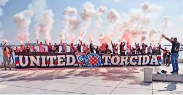

Ultras are die-hard fans from soccer who are willing to cheer for there clubs under no circumstances, some of the best ultras mainly come from Europe. Being a ultras commonly consists of cheering for the whole 90 minuets,pyro and choreography of team banners. The saying "no pyro, no party" was created by a ultra group but now is adapted to soccer in general.
Legia Warsaw
Legia Warsaw from the Polish top tire soccer league has one of the most intimedating ultras in the world. What makes Warsaw a little more than intimedating is the protest they do about concerning Polish politics and F.I.F.A the soccer association, they display banners and flags to prove that they should be heard on to what they have to say. The amazing chants and pyro really can disturb the opposing teams and make Legia Warsaw a powerhouse of a club.
The image below is just a snapshot of what they can do.
Belgrade Derby
The Belgrade Derby also known was the Enternal Derby is located in Belgrade,Serbia where the two local teams from Belgrade, Fudbalski Klub Partizan play against Crvena Zvezda. This matchup is the most violent game in the world agmost the fans alone. Fudbalski Kulb Partizan fans are called Grobari meaning the Undertakers, they are the most fiercest fans in the world. The fans from Crvena Zvezda are called Delije meaning Soldiers and their name really matches their actions they do as ultras.
Hajduk Split
Hajduk Split from the top tire league in Croatia is the powerhouse of all ultras around the world along side Croatian club Dinamo Zagreb. Hajduk Split is considered the most controversial ultra in the world because of the banners they put up during soccer games which are televised around the globe. They inspired the Australian club Western Sydney Wanderers on creating the famous chant "who do we sing for". 
Milan Derby
The most anticipated matchup in Italy is the Milan Derby where AC Milan vs Inter Milan, not only the ultras are spectacular but the level of soccer is amazing, the players who went through this derby are legends. Pirlo, Kaka, Maldini, Zanetti and Mihajlovic are just the few legends apart of the derby. Couple of times this matchup was abandoned due to the fact the fans went absoulontly went crazy.
Intercontinental Derby
The matchup that the whole of Turkey waits for, Galatasaray vs Fenerbahce the Intercontinental Derby. Galatasaray the best team in Turkey and the best ultras, for the whole 90 minuets they sing, perform an amazing choreography and pyro. Galatasaray legend Sabri Sarioglu made the chant where after every win he stands in the middle of the field and sings with the ultras, modern day player Wesley Sneijder adopted the chant. Bitter rivals Fenerbahce well and truly matches the pyro Galatasaray performs and both teams in one stadium can outclass every ultra in the world.